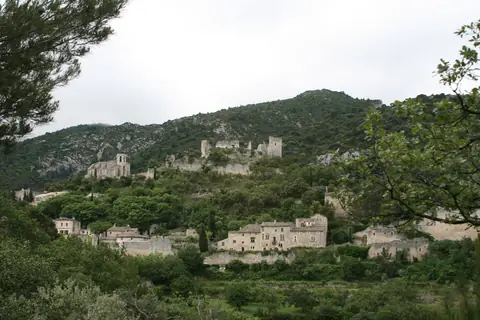

{kind=link}

Coustellet 생산자 시장
뤼베롱 현지 농부들이 직접 재배하고 만든 신선 농산물과 특산품만 판매하는 프랑스 공인 정통 생산자 직거래 일요 시장(Marché Paysan). 뤼베롱 농가 체류의 최고의 식재료 보급 거점.

| 항목 | 평가 |
|---|---|
| 여행 적합도 | ★★★★★ Jason·Julia의 생활형 여행에 최적화 |
| 예산 체감 | 숙박비 높음 |
| 일정 강도 | 느림 |
| 예약 핵심 | 농가 주소·진입·체크인 P0 |
| 우천 전환 | 농가 독서·실내 스케치·가까운 마을 카페 |
여행의 역할: 엑상프로방스의 도시생활과 카시스·마르세유 당일치기를 마친 뒤, 뤼베롱에서는 속도를 낮춘다. 이 구간의 목적은 유명마을을 가능한 많이 수집하는 것이 아니라 농가 숙박 자체, 마을의 재료와 지형, 시장에서 산 식재료, 스케치·산책·테라스 식사를 하나의 생활 경험으로 만드는 것이다.
최신 확정사항: 프로방스는 엑상 4박 + 뤼베롱 농가 3박 + 아비뇽 4박으로 운영하며, 뤼베롱 농가 숙박은 옵션이 아니라 확정 일정이다. 수영장 유무·가열·길이는 숙소 평가에서 완전히 제외하고, 중앙입지·농가환경·전용주방·세탁·주차·포장도로·생활편의·3박 총액을 우선한다. 기존 4박 예약표기는 변경 완료가 아니라 예약 변경 필요 상태다.
사용자 선호 반영: 실내 전시보다 Lourmarin, Roussillon, Goult 또는 Bonnieux, Gordes, Ménerbes 또는 Oppède의 서로 다른 성격을 비교한다. L’Isle-sur-la-Sorgue 목요시장은 새 날짜와 맞지 않아 기본 일정에서 제외했다.
시장에서 산 재료로 한 끼 완성 가장 중요한 체험이다. 고급 레스토랑보다 시장에서 산 치즈·토마토·빵·과일을 농가 테라스에서 먹는 경험이 이 구간의 정체성에 더 가깝다.
pétanque 한 게임 숙소에 코트가 있으면 규칙을 완벽히 알지 못해도 30분 즐긴다. 현지 생활의 리듬을 체험하는 간단한 방식이다.
포도밭·올리브밭 가장자리 산책 - 사유지 경계를 지킨다 - 수확 작업차량을 방해하지 않는다 - 일몰 전 30–45분이 좋다
| 항목 | 이유 |
|---|---|
| 마르세유·아비뇽 당일치기 | 마르세유는 Aix에서, 아비뇽은 9/16부터 4박 한다 |
| 베르동 협곡 | 왕복만 하루. 이 구간 리듬과 안 맞는다 |
| 라벤더 밭 투어 | 9월에는 없다 |
| 마을 5개 이상 하루 | 운전과 주차만 하다 끝난다 |
뤼베롱 현지 농부들이 직접 재배하고 만든 신선 농산물과 특산품만 판매하는 프랑스 공인 정통 생산자 직거래 일요 시장(Marché Paysan). 뤼베롱 농가 체류의 최고의 식재료 보급 거점.

보클뤼즈 고원 가장자리 백색 석회암 절벽 위에 층층이 솟아오른 뤼베롱 최고의 요새 마을. 마을 진입로에서 마주하는 압도적인 파노라마 전경과 11세기 중세 르네상스 성채.

알베르 카뮈가 영면한 뤼베롱 남부의 평탄하고 세련된 예술 마을. 프로방스 최초의 르네상스 성(Château de Lourmarin), 플라타너스 그늘 아래 카페 테라스, 로즈마리에 덮인 소박한 카뮈의 묘소.

17가지 타오르는 황토빛(Ochre) 절벽과 소나무 숲이 어우러진 뤼베롱에서 가장 이색적인 붉은 마을. 1억 년 지질학의 기적 '오커 트레일(Sentier des Ocres)'과 파스텔톤 가옥 골목.

1148년 깊은 협곡 속에 세워진 12세기 시토회(Cistercian) 로마네스크 수도원. 일체의 장식을 배제한 절대적 청빈의 중세 석조 건축과 현재도 이어지는 수도사들의 침묵 기도.

뤼베롱 산맥 북사면에 층층이 솟아오른 가장 낙차가 큰 계단식 언덕 마을. 해발 425m 옛 성당(Vieille Église) 정상 테라스에서 맞은편 라코스트(Lacoste) 성채와 계곡 전체를 굽어보는 압도적 파노라마.

대형 관광버스가 닿지 않아 뤼베롱에서 가장 고요하고 평화로운 '숨겨진 보석' 마을. 언덕 정상의 17세기 예루살렘 풍차(Moulin de Jérusalem)와 현지인들의 정겨운 일상이 살아있는 골목길.

에메랄드빛 소르그(Sorgue) 강이 섬처럼 감싸 흐르는 '프로방스의 베네치아'. 이끼 낀 거대한 목조 물레바퀴(Roues à aubes), 300여 개 앤틱 상점이 밀집한 유럽 3대 골동품 도시이자 시인 르네 샤르의 고향.

피터 메일의 소설 『프로방스에서의 1년』의 무대이자 피카소의 뮤즈 도라 마르가 살았던 길고 좁은 능선(Ridge) 위의 성채 마을. 뤼베롱 와인과 트러플의 중심지이자 고즈넉한 예술 마을.

19세기 주민들이 떠난 뒤 시간 속에 멈춰버린 뤼베롱의 신비로운 옛 중세 요새 마을. 숲과 덩굴에 뒤덮인 12세기 성채 폐허와 복원된 노트르담 달리동(Notre-Dame-d'Alidon) 성당.

시멘트나 모르타르 없이 납작한 석회암 조각만을 층층이 쌓아 올린 20여 채의 건식 석조(Dry-stone) 원추형 오두막 군락. 프로방스 농민들의 지혜가 담긴 야외 민속 건축 박물관.
| 장소·경험 | 등급 | 이유 |
|---|---|---|
| 농가생활·테라스 식사 | 필수 | 이 구간 자체의 목적 |
| Coustellet 생산자시장 | 필수 | 체크인 당일 식재료와 생활리듬 확보 |
| Roussillon·오커길 | 필수 | 다른 마을과 완전히 다른 지질·색채 경험 |
| Gordes 시장·마을 | 필수 | 뤼베롱 상징성과 화요일 일정 결합 |
| Lourmarin | 우선 추천 | 이동일에 맞고 스케치 행사와 결합 |
| Goult | 우선 추천 | 관광객이 덜한 생활마을·스케치 |
| Ménerbes | 우선 추천 | 포도밭·능선·와인·저녁 선택 |
| L’Isle 목요시장 | 대체 | 새 체크아웃 9/16과 맞지 않아 기본 일정 제외 |
| Village des Bories | 선택 | 열린 농업유산, 30–45분이면 충분 |
| Sénanque 내부 | 선택 | 건축·정적은 좋으나 농가·마을보다 후순위 |
| Oppède-le-Vieux | 선택 | 독특하지만 오르막과 돌길 |
| Bonnieux | 선택 | 전망·식당 우수, Goult와 교환 |
| Lacoste | 선택 | 성·예술마을, 일정이 과밀해지기 쉬움 |
| Fontaine-de-Vaucluse | 대체 | 이동일 자연경관, 수량·혼잡 변수 |
| 모든 유명마을 순회 | 비추천 | 주차·중복·피로가 농가체험을 약화 |
| Apt 대형시장 | 이번 체류 불가 | 토요일 시장으로 날짜 불일치 |
고르드 시장 바게트, 바농 염소치즈, 무화과, 하몽
프로방스 샐러드, 델리 조리식품
프로방스 양갈비 구이, 계절 3코스 디너
3박 거점은 대중교통 정류장이 아닌 농가 숙소다. Day 16–19의 마을 순회는 예약 렌터카를 정본으로 삼고, 도착 즉시 진입로·주차 위치와 야간 귀환 표식을 확인한다.
늦은 귀가 — 가로등 없는 좁은 도로를 피하려고 일몰 전 귀환을 원칙으로 한다. 늦어지면 마지막 방문지를 생략하고 바로 숙소로 돌아간다.
Day 16 Aix 체크아웃 뒤 렌터카로 Lourmarin·Coustellet·Goult를 거쳐 농가로 들어간다. 해 지기 전에 숙소 진입로와 주차 위치를 익힌다.
9.13(일) · Day 16 실행 보기Day 19 체크아웃 뒤 렌터카로 Avignon에 이동한다. ZOU! 915·907은 차량 장애 때 일정을 단일 축으로 줄이는 대안일 뿐 정본 동선이 아니다.
9.16(수) · Day 19 실행 보기차량 장애 때 Gordes 한 축으로 일정을 줄이는 비상안
Day 19 출발을 단순화할 때 출발지에 맞춰 검토하는 비상안
즉흥 대체편이 아니며 예약이 성립한 경우에만 사용
렌터카가 정본이다. 차량 장애 때 915·917·907 가운데 실제 출발지와 맞는 한 축만 검토하며, 예약형 989와 99xx 통학 노선을 일반 방문객 노선으로 혼동하지 않는다.
9/13 Aix → Lourmarin의 여행스케치 행사 → Coustellet 생산자시장 → 농가 체크인
↓
9/14 Roussillon 오커길 → 마을 → Goult 또는 Bonnieux → 농가 저녁
↓
9/15 Gordes·Village des Bories → Ménerbes 또는 Oppède 선택 → 농가 마지막 저녁
↓
9/16 느린 농가 아침 → 체크아웃 → Avignon 체크인·가벼운 성벽 산책
| 날짜 | 요일 | 테마 | 기본 동선 | 피로도 |
|---|---|---|---|---|
| 9/13 | 일 | 엑상에서 농가로, 스케치와 시장 | Aix → Lourmarin → Coustellet → 농가 | 3/5 |
| 9/14 | 월 | 오커색과 생활마을 | 농가 → Roussillon → Goult/Bonnieux → 농가 | 3/5 |
| 9/15 | 화 | Gordes와 돌의 문화 | 농가 → Gordes → Bories → Ménerbes/Oppède 선택 → 농가 | 3/5 |
| 9/16 | 수 | 농가 체크아웃과 아비뇽 이동 | 농가 → Avignon 숙소·주차 → 가벼운 산책 | 3/5 |
| Day | 날짜 | 점심 | 저녁 |
|---|---|---|---|
| 16 | 9/13 일 | 뤼르마랭 또는 이동 중 | 농가 — 쿠스텔레 장본 것으로 |
| 17 | 9/14 월 | 루시용 또는 고울트 | 농가 |
| 18 | 9/15 화 | 고르드 시장 조달 | 농가 또는 식당 한 번 |
| 19 | 9/16 수 | 농가 테라스 | 농가 |
| 선택 | 9/17 목 | 리슬 시장 조달 | 기본 일정 아님 |
식당은 3박 중 한 번이면 충분하다. 이 구간의 목적이 농가 생활이다.